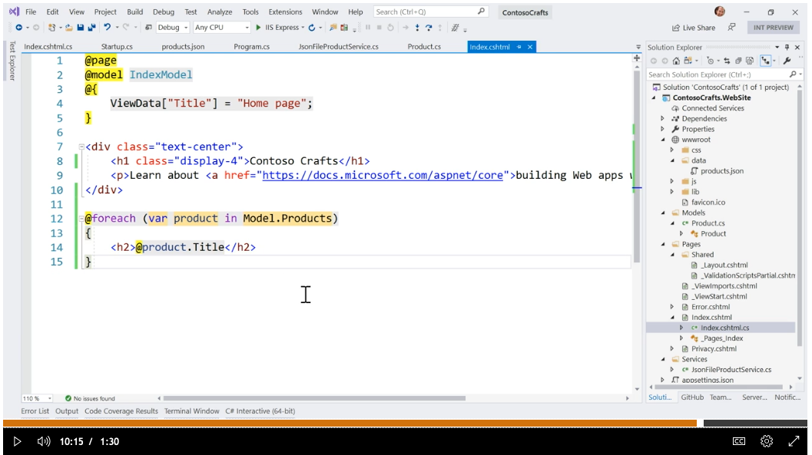

2020-06-18 ASP.NET Core Service
ASP.NET Core Web Application 強烈使用 Service。這系列教程很完整傳遞這個概念。
查看視頻
教程視頻兩位主角： Scott Hanselman 和 Leslie Richardson 。
原本從JSON檔案讀資料出來，也就是幾行的代碼，但是這裡開始"做大"。先定義出單獨的一個Service, 其中使用了配置信息，可以方便定位到這個JSON檔案，也為佈署做了前期準備。
在不同的教程都說了一樣的一件事：ASP.NET 其實是命令程序的延伸。框架是一樣，在版本3起使用了這個HostBuilder, 畫面黃底的部份，就是啟用 Startup。
在 Startup 裡啟用了剛才新建的 Service 。
在主頁後的Model 準備調用這個 Service。這裡最大的差別就是，不是直接去定義 Service 的地方取用，而是透過 Startup 的整個服務機制運行。
在頁面上要調用數據，準備的接口就是 Model。

教程裡很細心故意演示一個BUG。
然後在適當地方解決了問題。
整個數據最具代表的產品名稱先在頁面上出現。後續的畫面資料要調試，有大一部份是美工部份。
現在再來讀教程的這部份簡介，有些部份會清楚些了。
ASP.NET uses a technique called "dependency injection" that's built right in. That lets us make classes called "services" that we can make available to any other classes in our website.